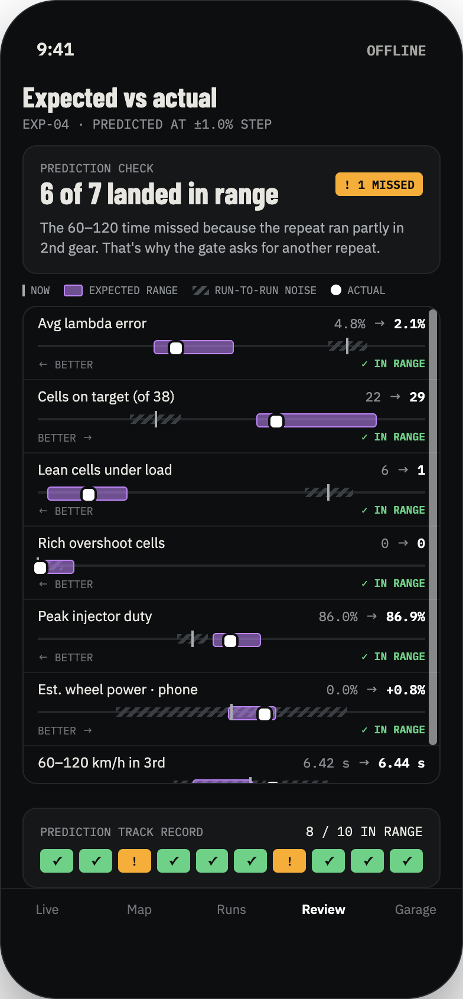
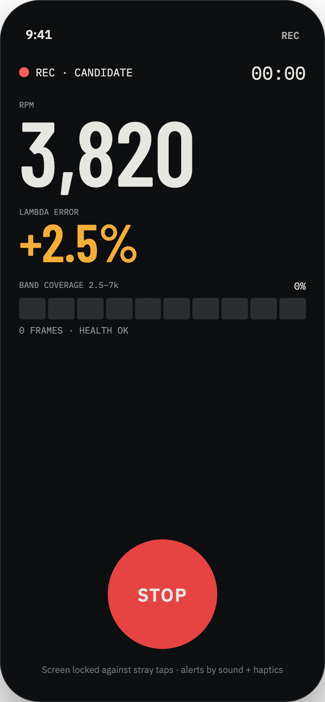

Many good standalone ECUs sit unused because their software stopped years ago. AhhPuck is a community project to bring them back with modern logging and safe, step-by-step tuning. We start with the Freedom FC-03, then adapt the same process to every unsupported ECU like it.
Lower costA second-hand ECU and a serial cable, instead of a new ECU, harness and licence.
Better loggingModern sample rates, phone sensors, hashes and exports the old software never had.
Safer tuningOne small, reversible step at a time. A gain counts only when it repeats.
THE ROADMAP
Freedom first. Then every unsupported ECU like it.
The FC-03 is the proving ground. Once the loop works on a real car, the same shared core becomes adapters for other good ECUs that lost their software, not their value.
01 · NOW! IN PROGRESS
Freedom FC-03Read-only capture on a 4A-GE 20V. Verified decoding, real logs, the full loop on one car.
02 · NEXT– PLANNED
Shared coreTransport, decoder, safety monitor, recorder, gate and ledger, separated from anything Freedom-specific.
03 · THEN– PLANNED
Community adaptersOwners and developers add one ECU family at a time. Every adapter starts read-only and earns its way forward.
04 · GOAL◎ GOAL
Any unsupported ECUOlder doesn't mean broken. Every working ECU gets a path back to support before it's replaced.
Which ECU should be next?TAP ALL THAT YOU RUN OR WANT
No second ECU starts until the FC-03 trial passes its gates. Requests help decide the order.
EVERY FREEDOM UNIT
The limits come from your ECU, not from the app.
Freedom units differ by coupler, load type, firmware and inputs. AhhPuck reads the label, builds a profile, and shows exactly what your unit can give: what's verified, what's not in this ECU, and what the community still has to decode.
✓ READ · VERIFIEDDecoded and confirmed against a real capture.
◐ READ · NOT VERIFIEDVisible in the data, but scaling isn't proven yet.
⌀ NOT IN THIS ECUYour unit doesn't have it. The app won't pretend otherwise.
… NOT DECODED YETThe ECU sends it; the community still has to decode it.
Example: ignition proposals stay off on a unit with unverified ignition scaling and no confirmed knock signal, and ECU self-learning must be off during tests.
HOW IT WORKS
One loop, from plug-in to a proven improvement.
The app, the workbench and the command-line tools all follow it. Every step leaves a file on disk, so nothing is lost.
The first release that can go in a car. Connect, identify, set limits, record a trusted baseline.Adds proposals and assessments as reports. Nothing is sent to the ECU.Closes the loop, fuel only, behind every safety gate and a person's approval.
01ConnectUSB serial, bridge or replay
02IdentifyWhich ECU, firmware and channels
03Profile & limitsEngine, sensors, goal, hard limits
04BaselineSaved, hashed, repeated
05ProposeOne small, bounded fuel change
06ApproveA person checks and says yes
07TestA controlled run with stop rules
08AssessDid it help, and did it repeat?
09LearnWrite it to the ledger. The next step is smaller, or the loop stops.

LEARNING FROM EVIDENCE
An improvement only counts when it repeats.
Each round compares a baseline, a candidate and a repeat of the candidate. Every prediction is shown as a range against run-to-run noise, so you can see whether a gain is real.
LAMBDA ERROR BY RUNtelemetry_stats.py
Baseline
0.052Candidate
0.026Repeat
0.024
Example numbers from the sample captures. Repeatability is checked separately.
#01baseline capturedclean
#02fuel 11×7 −1.5 %✓ improved · repeated
#03fuel 11×8 −1.5 %! not repeatable
#04fuel 11×8 −0.8 %✓ improved · repeated
#05knock in run✕ aborted · not reused
ECU FIRST
The engine data comes from the ECU. The phone fills in the rest.
Every value shows where it came from and how sure we are about it. The safety gate only uses the ECU and add-on sensors, never the phone.
ECU
Engine dataRPM, load, lambda, temperatures, battery, knock, speed. The only data used to make decisions.
PHONE
Speed and g-forceGPS and motion sensors cross-check ECU speed and confirm runs were driven the same way. They're never used to decide.
ADD-ON
The sensors the ECU doesn't haveWideband lambda, fuel pressure and oil pressure, used by the gate when they're fitted.
DOCUMENTEDOBSERVEDINFERREDUNVERIFIED
SAFETY LIMITS
Limits are set before the engine starts.
These values come from the safety policy file the tools enforce. They're provisional and must be checked for your engine, but they're never invented on the spot.
ALWAYS · NEVER
✕ Never learn from a run with a protection fault✕ Never change fuel and ignition in the same experiment✕ Never let an AI authorise an ECU write✕ Never change ignition without verified knock sensing✕ Treat a missing safety channel as a failed check, never a pass✓ Always keep the source map, the diff and a rollback copy
HARD LIMITSpolicy 0.2-provisional
Max fuel change per cell2.0 %Max ignition change per cell1.0 °Max RPM7 800Max coolant105 °CMax intake air temp65 °CMin battery voltage12.0 VMax knock level0.15Min oil pressure under load180 kPaMax lambda under load1.05 λ
WHERE TO TEST
DynoControlled load. Best for map work.
Closed courseReal motion. Log without touching the phone, review later.
! Public roads are not a tuning mode. AhhPuck records data for later review. It never tunes a moving car.

Built to glance at, not to touch.While recording, the screen shows three numbers and one big stop button. Alerts come by sound and haptics, run on fixed rules, and work offline. A critical alert can't be dismissed while the condition lasts.
HONEST STATUS
Read-only first. Writes stay outside the trial.
✓ BUILTFreedom map parser · telemetry statistics · iteration assessor · fail-closed safety gate · local learning ledger · iOS and Mac core · tuning knowledge base (22 sources, 7 rule cards)
! IN PROGRESSVerified Freedom export adapter · first live read (?DAT poll, 55-byte reply) · real capture corpus · bench recovery tests · trial FC-03 on the bench
– NOT YETAny ECU write · ignition proposals · a second ECU, only after the FC-03 trial produces real results
30Python tests passing
17Swift tests passing
7source-backed rule cards
0ECU writes authorised
OPEN COMMUNITY BUILD
Built by the people who still run these ECUs.
AhhPuck isn't trying to replace a tuner or make an old ECU pretend to be new. It's a shared path to bring back useful support for hardware that still works.
01OwnersShare baseline tunes, logs and your car profile.→ RECORD A BASELINE · SEND A SESSION BUNDLE
02TunersReview proposals, write rule cards and check the limits for each engine.→ REVIEW EXPERIMENTS · ADD RULE CARDS
03DevelopersBuild decoders and adapters. Everything is tested, and read-only first.→ OPEN AN ADAPTER · RUN THE TEST SUITE
04Keepers of knowledgeManuals, schematics, old software and cables, before they disappear.→ SHARE A SOURCE · WE HASH AND CITE IT
Owner data+Tuner experience+Developer tools→Shared evidence core→Support that lasts
Open by defaultThe process and evidence should be understandable by the people using it.
Older doesn't mean brokenA working ECU deserves a path back to support before it is replaced.
Proof before confidenceA result enters the shared record only when the data is repeatable.
FAQ
Questions owners ask first.
No. Every build so far is read-only, and ECU writes are locked in code. Writing would need its own bench proof of the protocol, scaling, checksums and recovery, plus a person's sign-off.
The Freedom FC-03 on a 4A-GE 20V comes first. Other families are on a candidate list, and none starts until the FC-03 trial passes its gates.
The FCSS serial cable and a USB-to-serial adapter. The Freedom talks at 9600 bps, 7E1. Until live reads are finished, the tools work offline on recorded captures.
Only if it was built for your car's ECU plug. Freedom units are coupler-on for one vehicle family, and the code on the silver label tells you which. Our trial unit is an AE111-coupler FC-03, so it needs an AE111 engine loom.
No. Public roads are not a tuning mode. Changes are tested on a dyno or a closed course, one bounded step at a time.
No. It proposes the smallest testable option from measured data and documented rules. A safety gate checks it, and a person decides whether to test it.
Yes. The app ships in English and Japanese, with consistent tuning terms in both.
HELP THE COMMUNITY
Have a baseline tune or Freedom ECU knowledge?
Help test the read-only build, share a baseline tune or logs, or contribute what you know about the Freedom ECU. Every useful reference helps bring support back to hardware that still works.